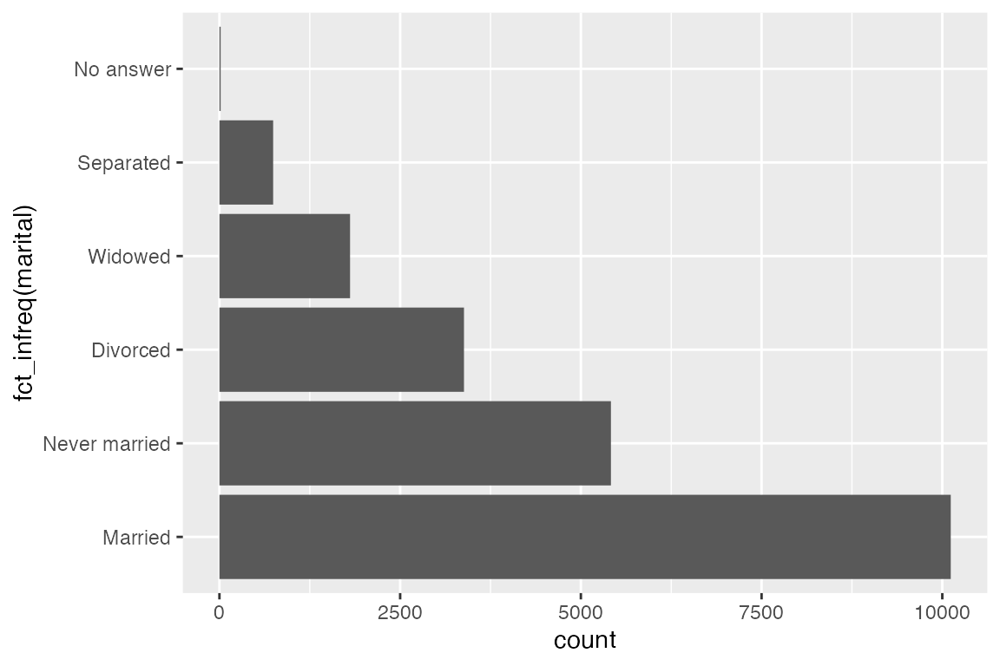
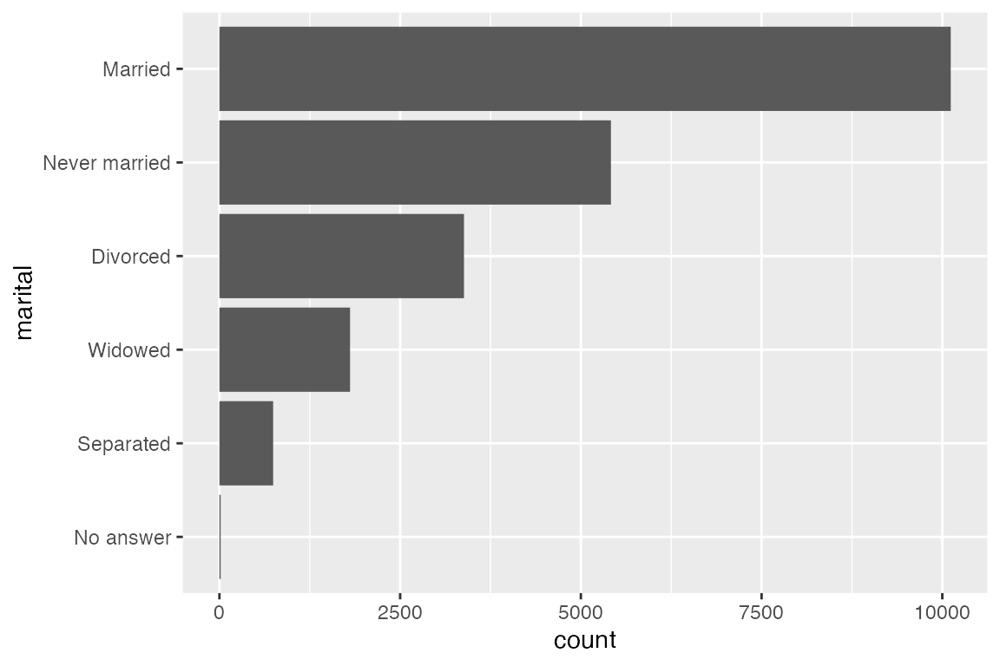
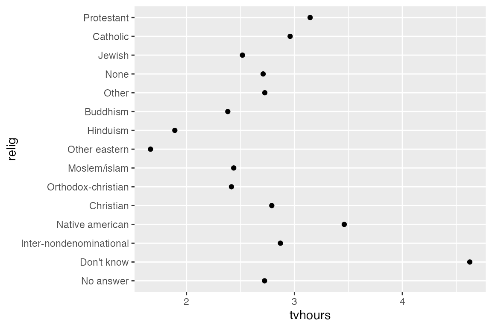
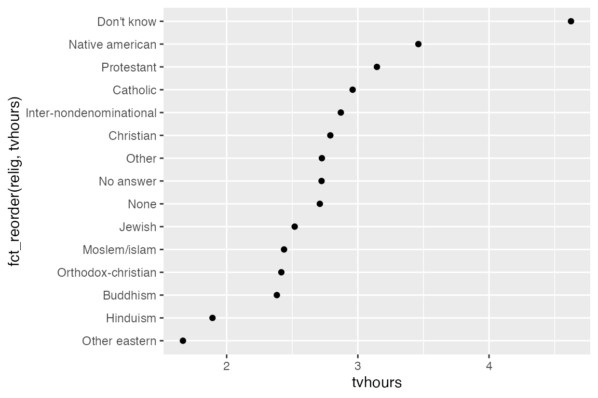
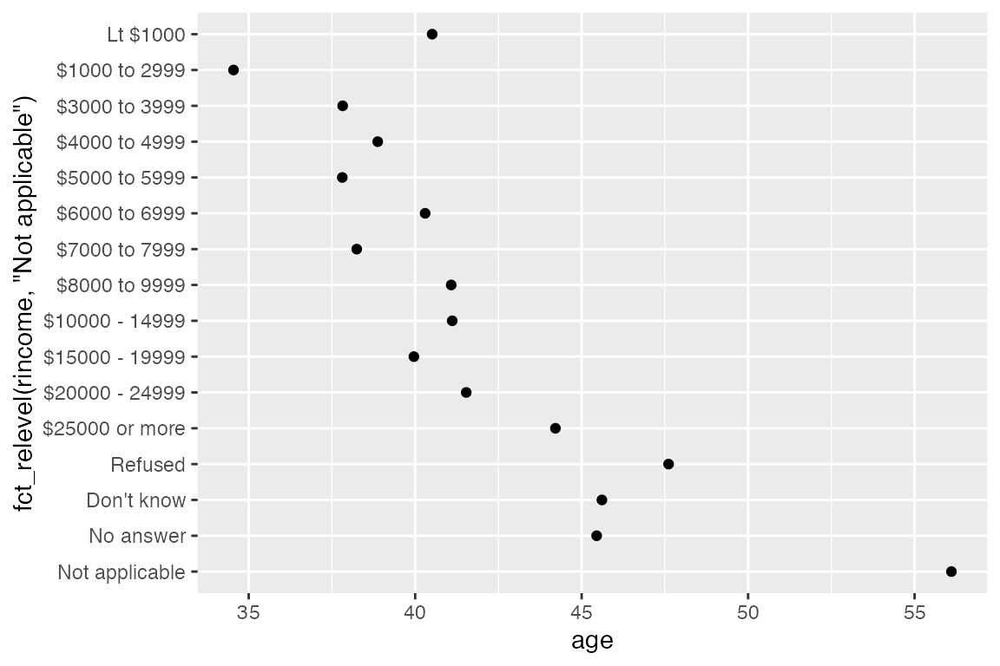

7 forcats
7.1 forcats resources
forcatswebsite- R for Data Science, Chapter 17: Factors
- Introduction to forcats vignette
- McNamara and Horton, “Wrangling categorical data in R”1
These notes use both the forcats vignette and the chapter from R for Data Science, but they focus more on the latter, which is more robust. The notes use the gss_cat data from forcats from the General Social Survey.
7.2 Create factors
You can create a factor from a character vector with base factor(), forcats::fct(), or base as.factor(), forcats::as_factor(). fct() is stricter than factor(); it errors if your specification of levels is inconsistent with the values in the character vector. as_factor() creates levels in the order in which they appear, not in alphabetical order by locale as in base R.
You can also create a factor when reading your data with readr::col_factor(). See the readr notes.
library(readr)
csv <- "
month,value
Jan,12
Feb,56
Mar,12"
read_csv(csv, col_types = list(month = col_factor(month.abb)))
#> # A tibble: 3 × 2
#> month value
#> <fct> <dbl>
#> 1 Jan 12
#> 2 Feb 56
#> 3 Mar 12When working with factors, the two most common operations are changing the order of the levels and changing the values of the levels.
7.3 Modifying factor order
Modifying factor order is particularly useful for purposes of visualization so that the geoms are ordered by frequency or a specified value in the data.
Reordering functions:
7.3.1 fct_infreq()
fct_infreq() is particularly useful for bar plots. It orders factor levels by the number of observations of each level, placing the largest first. It can be used with fct_rev() to reverse the order of the levels if you want smallest first.
# fct_infreq
ggplot(gss_cat) +
geom_bar(aes(y = fct_infreq(marital)))
# fct_rev
gss_cat |>
mutate(marital = marital |> fct_infreq() |> fct_rev()) |>
ggplot() +
geom_bar(aes(y = marital))

7.3.2 fct_reorder()
fct_reorder() reorders factor levels by sorting along another variable. This is only useful when factor levels have an arbitrary order such as alphabetical or first appearance.
relig_summary <- gss_cat |>
group_by(relig) |>
summarize(
tvhours = mean(tvhours, na.rm = TRUE),
n = n()
)
# Without reordering
ggplot(relig_summary) +
geom_point(aes(x = tvhours, y = relig))
# Reorder relig levels by tvhours
ggplot(relig_summary) +
geom_point(aes(x = tvhours, y = fct_reorder(relig, tvhours)))

7.3.3 fct_reorder2()
fct_reorder2() is useful for when a factor is mapped to a non-position aesthetic such as color. fct_reorder2(f, x, y) reorders the factor f by the y values associated with the largest x values. This makes the colors of the line at the far right of the plot line up with the legend.
7.3.4 fct_relevel()
fct_relevel() manually moves levels. It can be used as a shortcut to move individual levels to the beginning of the order of levels. For instance, we can move “Not applicable” from the rincome variable to the front to be with the other non-answer types.
rincome_summary <- gss_cat |>
group_by(rincome) |>
summarize(
age = mean(age, na.rm = TRUE),
n = n()
)
ggplot(rincome_summary) +
geom_point(aes(x = age, y = fct_relevel(rincome, "Not applicable")))
7.4 Modifying factor level
Modifying functions:
fct_recode()fct_collapse()fct_lump_*()
7.4.1 fct_recode()
fct_recode() changes factor levels by hand. This is useful when the factor levels are abbreviations or shorthand that you want to change for presentation. fct_recode() will leave the levels that are not explicitly mentioned as is, and will warn you if you accidentally refer to a level that does not exist.
# partyid levels are awkward
gss_cat |> count(partyid)
#> # A tibble: 10 × 2
#> partyid n
#> <fct> <int>
#> 1 No answer 154
#> 2 Don't know 1
#> 3 Other party 393
#> 4 Strong republican 2314
#> 5 Not str republican 3032
#> 6 Ind,near rep 1791
#> 7 Independent 4119
#> 8 Ind,near dem 2499
#> 9 Not str democrat 3690
#> 10 Strong democrat 3490
# recode partyid levels
gss_cat |>
mutate(
partyid = fct_recode(partyid,
"Republican, strong" = "Strong republican",
"Republican, weak" = "Not str republican",
"Independent, near rep" = "Ind,near rep",
"Independent, near dem" = "Ind,near dem",
"Democrat, weak" = "Not str democrat",
"Democrat, strong" = "Strong democrat"
)
) |>
count(partyid)
#> # A tibble: 10 × 2
#> partyid n
#> <fct> <int>
#> 1 No answer 154
#> 2 Don't know 1
#> 3 Other party 393
#> 4 Republican, strong 2314
#> 5 Republican, weak 3032
#> 6 Independent, near rep 1791
#> 7 Independent 4119
#> 8 Independent, near dem 2499
#> 9 Democrat, weak 3690
#> 10 Democrat, strong 3490
7.4.2 fct_collapse()
You can use fct_recode() to lump levels together, but you need to retype the new level multiple times. If you want to collapse multiple levels into a smaller number of levels, it is best to use fct_collapse().
gss_cat |>
mutate(
partyid = fct_collapse(partyid,
"other" = c("No answer", "Don't know", "Other party"),
"rep" = c("Strong republican", "Not str republican"),
"ind" = c("Ind,near rep", "Independent", "Ind,near dem"),
"dem" = c("Not str democrat", "Strong democrat")
)
) |>
count(partyid)
#> # A tibble: 4 × 2
#> partyid n
#> <fct> <int>
#> 1 other 548
#> 2 rep 5346
#> 3 ind 8409
#> 4 dem 7180
7.4.3 fct_lump_*()
Use the fct_lump_*() family of functions to quickly lump together small groups of factor levels to make a plot.
fct_lump_lowfreq() progressively lumps the smallest groups categories into “Other”, always keeping “Other” as the smallest category. It is not overly useful in the case below, but it shows how it works.
gss_cat |>
mutate(relig = fct_lump_lowfreq(relig)) |>
count(relig)
#> # A tibble: 2 × 2
#> relig n
#> <fct> <int>
#> 1 Protestant 10846
#> 2 Other 10637fct_lump_n() is more exact, allowing you to control the number of levels to end up with.
gss_cat |>
mutate(relig = fct_lump_n(relig, 10)) |>
count(relig, sort = TRUE)
#> # A tibble: 10 × 2
#> relig n
#> <fct> <int>
#> 1 Protestant 10846
#> 2 Catholic 5124
#> 3 None 3523
#> 4 Christian 689
#> 5 Other 458
#> 6 Jewish 388
#> 7 Buddhism 147
#> 8 Inter-nondenominational 109
#> 9 Moslem/islam 104
#> 10 Orthodox-christian 95fct_lump_min() lumps levels that appear fewer than min times.
gss_cat |>
mutate(relig = fct_lump_min(relig, 100)) |>
count(relig, sort = TRUE)
#> # A tibble: 9 × 2
#> relig n
#> <fct> <int>
#> 1 Protestant 10846
#> 2 Catholic 5124
#> 3 None 3523
#> 4 Christian 689
#> 5 Other 553
#> 6 Jewish 388
#> 7 Buddhism 147
#> 8 Inter-nondenominational 109
#> 9 Moslem/islam 104fct_lump_prop() lumps levels that appear in fewer than (or equal to) prop * n times.
gss_cat |>
mutate(relig = fct_lump_prop(relig, 0.01)) |>
count(relig, sort = TRUE)
#> # A tibble: 6 × 2
#> relig n
#> <fct> <int>
#> 1 Protestant 10846
#> 2 Catholic 5124
#> 3 None 3523
#> 4 Other 913
#> 5 Christian 689
#> 6 Jewish 388fct_other() is a convenience function that manually recodes levels with “Other” if you want to do it by hand. You can either list the levels to keep or those to drop to convert to other.
gss_cat |>
mutate(relig = fct_other(relig, drop = c("Other eastern"))) |>
count(relig, sort = TRUE)
#> # A tibble: 14 × 2
#> relig n
#> <fct> <int>
#> 1 Protestant 10846
#> 2 Catholic 5124
#> 3 None 3523
#> 4 Christian 689
#> 5 Jewish 388
#> 6 Other 256
#> 7 Buddhism 147
#> 8 Inter-nondenominational 109
#> 9 Moslem/islam 104
#> 10 Orthodox-christian 95
#> 11 No answer 93
#> 12 Hinduism 71
#> 13 Native american 23
#> 14 Don't know 15